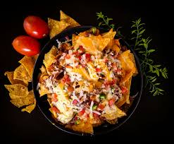
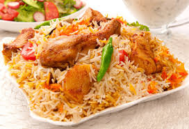

My favourite food/snacks
Nachos

Nachos are Mexican culinary dish, which consists of tortilla chips or totops covered with cheese sause as well as other topings and garnishes such that of vegetables, meats and different condiments. The dish was created by, and named after, Mexican restaurateur Ignacio "Nacho" Anaya, who created it in 1943 for American customers at the Victory Club restaurant
Loaded Fries

Loaded fries is a dish consisting of French fries topped with a cmobination of cheese, sauses, meat and vegetables. Common ingredients include cheese, chopped bacon and garnishes like sliced green onions or jalepenos. Variations of loaded fries based on dishes from Tex-Mex and Indian cuisine are also popular.
Biryani

Biryani is a mixed rice dish, mainly popular in South Asia. It is made with rice, some type of meat. To cater to vegetarians, in some cases, it is prepared by substituting vegetables or paneer for the meat.[1] Sometimes eggs or potatoes are also added. Biryani is the single most-ordered dish on Indian online food ordering and delivery services, and has been labelled as the most popular dish overall in India.